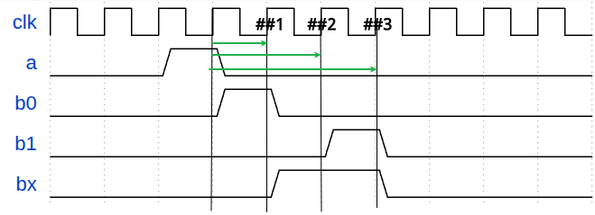
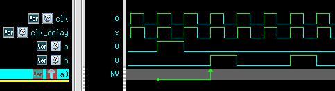
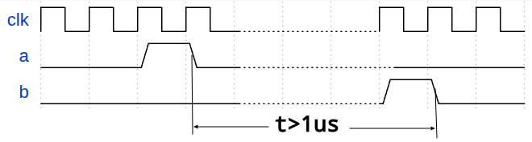
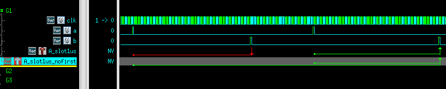

SVA(SystemVerilog Assertion)¶
1 简介¶
SVA断言(assert)是用来描述设计预期行为(intended behavior)或属性(property)的一种简洁方式。
断言是对复杂时序的简单描述
利用断言可以检查RTL行为及属性是否符合设计要求
断言分为即时(immediate)断言和并行(concurrent)断言
1.1 即时断言¶
信号发生改变时进行立即检查，信号不变时不进行检查
格式如下
执行块 action block只能包含一些打印语句(如
$display、$fatal和`uvm_error等)，而不能写赋值语句 执行块的pass action只会在断言成功时执行（在空成功时不执行任何action）
即时断言只能在程序块中
程序块如always_comb、task、function等
举例如下
| Systemverilog | |
|---|---|
1.使用ASSERT宏开关控制assertion的开启和关闭
2.
%m可以得到assert名
1.2 并行断言¶
检查一段时序关系，可以持续监控数个周期，独立于过程块执行
在每个采样时钟都检查（除非是满足disable iff()中的条件时，不进行检查）
采样时钟由于并行断言是持续监控数个周期的信号值，因此需要通过采样时钟来采样信号值(如@(posedge clk))
采样时钟采到的值是采样时钟边沿前一刻信号的值(refer to systemverilog的调度)
并行断言的格式如下，需要在property_expr中声明采样时钟
property 举例如下
| Systemverilog | |
|---|---|
上例中代码需要检测如下行为：
采到a为1，过两个采样时钟，采到b为1
上面代码的断言仿真波形如下 vcs verdi
不同工具断言波形表示不同
有的工具不在匹配结束点，而是在波形上在匹配开始点用箭头表示匹配的成功/失败

详细解析如下
①位置采到a=1,因此启动线程开始监测(图中
A_concurrent绿色箭头起点)
经过两个采样时钟(图中##1和##2)
②位置采到b=1，因此持续监测满足断言要求的时序，在匹配成功结束处打上绿色箭头

1.3 SVA 层次¶
verilog中的bool表达式只能简单地描述一个采样时钟沿各个信号的逻辑关系，而为了能够描述一段时间内的信号行为，就需要引入SVA中序列(sequence)的概念
序列可以合成属性前一节中的
a ##2 b就是一个序列表达式
| Systemverilog | |
|---|---|

规范起见，采样时钟一般在属性中进行声明，这样也可以保证定义的序列更有通用性
序列和属性都可以带形参，提高可复用性
| Systemverilog | |
|---|---|
时序窗口¶
示例
时间窗口本质是在时钟边沿启动多个线程来检查
如示例中，检测到a为高，在该仿真时刻启动三个线程，分别在
##1/##2和##3进行检查，如下图绿色箭头所示

示例中的时序窗口按线程转换为等价形式为
TODO TODO
| Systemverilog | |
|---|---|
并且第五周期b拉高也没打印出success信息，只有第二周期b拉高的成功打印


1.在时序窗口前增加一些过滤条件，防止每个时钟上升沿都启动时序窗口多线程
2.不使用过大的时序窗口，否则会开启过多线程(可以用intersect对大窗口或无限窗口做约束,后续会提到该方法)
案例分析¶
001¶
如图所示，要求b在a拉起后,至少过1us再拉起
要求断言检查出时隙<1us的情况

思路：如果是周期要求，那么就很简单只需要用## n语法即可。
而本例中要求检查的是具体时间，可以用系统函数来计算时隙大小
特别注意first_match函数在上面代码中的作用
如下图所示，如果没有firstmatch，##[0,$]这个特殊的线程就会一直匹配直到匹配成功为止
这个线程尽管遇到后面条件失败，也不会认为失败，而是会认为在无限远的将来会匹配成功，因此会持续等待。也就是说除非运行时间结束，否则不会失败
这个问题本质上也是[a:b]等价展开的问题，展开式之间是或逻辑，所以一个子项失败不算整体失败，而是继续期待
